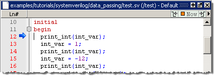
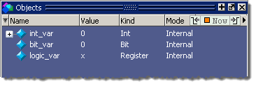
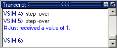
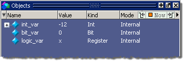
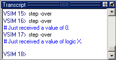

Run the Simulation
Procedure
- Right-click the test instance in the Structure (sim) window and select View Declaration from the popup menu that appears. This will open a Source window and display the test.sv source code.
- Click
the Step Over button.
With this first step you should be on line #12 in test.sv (indicated
by the blue arrow in the Source window - see Figure 1) where we print out the value of int_var –
which is defined as an int on
line #6. Figure 1. Line 12 of test.sv in the Source Window
Nothing has been assigned to int_var yet, so it should have its default initial value of 0. If you look in the Objects window, you should see that int_var is indeed equal to 0 (Figure 2).
Figure 2. The Value of int_var is Currently 0 - Click
the Step Over button again. This will call the imported C function print_int with int_var as
its input parameter. If you look in the Transcript window after
this line executes, you should see the following message:
Just received a value of 0.That is what we expect to happen. So far, so good.
- Next we set int_var to a value of 1. Click the Step Over button and you will see the value of int_var change to 1 in the Objects window.
- Now do
another Step Over and you should see a 1 being printed in the Transcript window
this time (Figure 3). Figure 3. The Value of int_var Printed to the Transcript Window
- With the
next two steps (click Step Over twice), we change int_var to
-12 and print again. You should get the idea now. Both positive
and negative integers are getting set and printed properly.
Next we are going to use the print_int function to print the value of bit_var, which is defined as a bit type on line #7. It also has a default initial value of 0, so you can guess what will be printed out.
- Click
Step Over again and verify the results in the Objects window (Figure 4) and in the Transcript window (Figure 5).Figure 4. The Value of bit_var is 0.Figure 5. Transcript Shows the Value Returned for bit_var

- Click Step Over twice to set bit_var to a 1 and print to the transcript.
- Click
Step Over once to set bit_var to
X.
Look in the Objects window. The variable did not go to X. It went to 0. Why?
Remember that the bit type is a 2-state type. If you try to assign an X or a Z, it gets converted to 0. So we get a 0 instead, and that is what should get printed.
- Click
Step Over for the print_int function and verify that a value of
0 is printed.
Now try some 4-state values. You should be on line #22 now where logic_var is a 4-state "logic" type being assigned a 1.
- Click Step Over to go to line #23. You should see the value of logic_var change from X to 1 in the Objects window.
- Click Step Over to call print_int again and print the value of logic_var to the transcript.
- Click Step Over to set logic_var to X.
- Click
Step Over to print logic_var.
You should be on line #26 now. Look at the transcript and you will
see that a value of 0 is printed instead of X. Why? Let us look into
the source code to see what happened.
Look at the foreign.c file in Figure 1, which is the C source for our imported functions. In line 3, the print_int function is expecting an integer (int) as its input. That works fine when we were sending integers. But now we are working with 4-state data types, which allow X and Z values. How is that kind of data going to cross over the boundary, and what is it going to look like when it gets over to C? What about user defined types and the many other types of data we can send back and forth? How are you supposed to know how to write your C functions to accept that kind of data properly and/or send it back to Verilog properly?
Fortunately, the answer to all these questions is that you do not really have to know the fine details. The SystemVerilog language defines this data mapping for you. Furthermore, Questa SIM will create a C header file for you during compilation that you can reference in your C code. All the function prototypes, data type definitions, and other important pieces of information are made available to you via this header file.
If you look at the compile target in the Makefile (Figure 1) you will see an option in the vlog command called “-dpiheader” with an output file name as its argument. As the compiler compiles your Verilog source file, it analyzes any DPI import/export statements and creates a C header file with what it knows to be the correct way to define the prototypes for your imported/exported functions/tasks. In this lesson, we call the file dpi_types.h (Figure 6).
Figure 6. The dpi_types.h File1 /* MTI_DPI */ 2 3 /* 4 * Copyright 2004 Mentor Graphics Corporation. 5 * 6 * Note: 7 * This file is automatically generated. 8 * Please do not edit this file - you will lose your edits. 9 * 10 * Settings when this file was generated: 11 * PLATFORM = 'win32' 12 * Info = SE 6.1c 2005.11 13 */ 14 #ifndef INCLUDED_DPI_TYPES 15 #define INCLUDED_DPI_TYPES 16 17 #ifdef __cplusplus 18 extern "C" { 19 #endif 20 21 #include "svdpi.h" 22 23 DPI_DLLESPEC 24 void 25 print_int( 26 int int_in); 27 28 DPI_DLLESPEC 29 void 30 print_logic( 31 svLogic logic_in); 32 33 #ifdef __cplusplus 34 } /* extern "C" */ 35 #endif 36 37 #endif /* INCLUDED */ 38At the top of this file is information for internal DPI purposes. But if you go down to line 25, you will see a function prototype for the print_int function. As expected, the input parameter is an int type.
Just below this function is the prototype for the print_logic function, which has an input parameter of type "svLogic" (that is, SystemVerilog Logic). This file includes another header file called svdpi.h, which is part of the SystemVerilog language and is shipped in the Questa SIM installation directory (that is why we have "-I$(QUESTA_HOME)/include" on the command line for C compilation in the Makefile's "foreign" target – see Figure 1). This svLogic type is basically an unsigned char.
When you put #include dpi_types.h in your C source file, all these function prototypes and data types will be made available to you. In fact, we strongly recommend that you use this file when writing the C code that will interface with Verilog via DPI.
Look back at the test.sv file (Figure 2) and look for the DPI import statements. There is one for print_int and one for print_logic. The vlog compiler looks at these statements, sees the names of the functions being imported along with their parameters and return values (in Verilog terms), and then creates the correct DPI header file for you. In the case of the print_logic function, it saw that the input parameter was of type "logic". So it put logic's counterpart of "svLogic" in the header file. Now both elements of the dual personality for this particular object are defined and everything should pass over to C properly.
Let's go back to simulation. We should be on line #26, just after the point where the bad logic value of 0 got printed instead of an X. Now that we know we were using the wrong function for this particular type of data, we will use the print_logic function instead.
- Click
Step Over to execute this line. The X value is printed out this
time (Figure 7). You can take a look at the foreign.c file
to see how this was accomplished.Figure 7. The Transcript Shows the Correct Value of logic X
Basically, 4-state values are represented as 0, 1, 2, and 3 in their canonical form. The values you see in the switch statement inside the print_logic function are #define'd in the svdpi.h file for you so that you can keep everything straight. Again, if you use the DPI header file in your C code, you can just use this stuff and everything will work properly.
Go ahead and step through a few more statements and you can see that logic_var gets set to some other 4-state values and we print them correctly using the print_logic function.